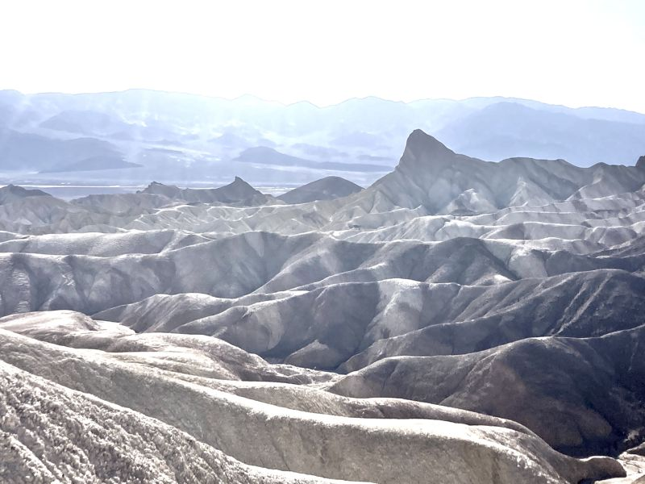
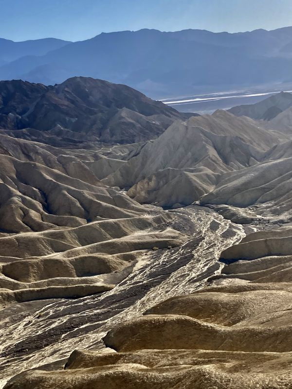

Gallery
Canyons
The desert Southwest is the opposite of the rainforest back home: wide open, sun-baked, and carved by water that mostly isn't there anymore. From wading the Narrows to standing over the badlands of Dead Valley, here's some of it. Tap any photo to enlarge it.

The Narrows
Zion National Park, Utah

Zabriskie Point Badlands
Dead Valley, California

Golden Canyon Ridges
Dead Valley, California